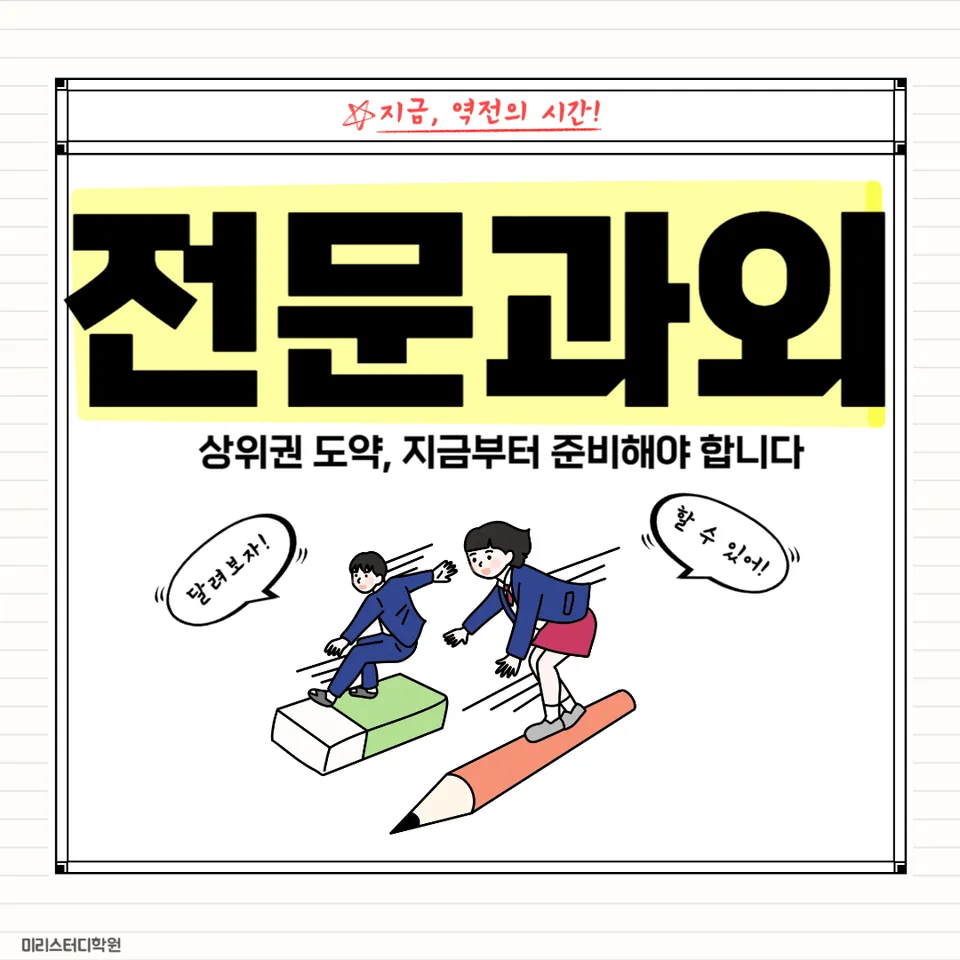

PageType : DONG
URL : /경기도과외/광주시과외/태전동과외/
지역 학습환경과 학생들의 변화
태전동과외를 시작한 학생들은 처음엔 “수업은 들었는데 왜 성적이 그대로일까”를 가장 먼저 묻습니다. 태전동의 학습 환경은 편차가 크지 않게 형성되어 있지만, 실제로는 학교 진도 속도와 과제량을 따라가는 방식이 학생마다 다릅니다. 그래서 태전동과외에서는 수업 시간보다 끝난 뒤 20~30분을 어떻게 쓰는지부터 관찰합니다. 수업이 끝난 뒤에도 책상에 앉는 시간이 늘고, 필기가 정리되는 방식이 바뀌면 다음 주 시험에서 체감이 빨라집니다.
학생이 달라지는 지점은 거창한 의지가 아니라, 공부 습관의 빈도가 바뀔 때입니다. 예를 들어 태전동과외를 받기 전에는 시험 직전에만 문제를 찾던 학생이, 최근에는 배운 단원을 “한 번 더 보기”로 끊어두고 스스로 확인합니다. 이 변화는 학습 태도에도 이어져, 수업 중 질문을 모으는 횟수와 오답노트에 적는 내용의 밀도가 함께 올라갑니다.
학부모가 많이 고민하는 부분
태전동과외를 상담할 때 학부모들이 가장 자주 걱정하는 건 내신이 불안한데도 어디를 먼저 손봐야 할지 모른다는 점입니다. 학생은 바쁘다고 말하지만, 시간관리 방식이 정리되지 않으면 같은 공부 시간을 써도 결과가 다르게 나옵니다. 특히 시험이 가까워질수록 학부모는 “문제를 더 풀어야 하나, 개념을 다시 잡아야 하나”를 반복적으로 고민합니다.
또 다른 고민은 학교생활의 리듬입니다. 지각이나 결석 같은 문제만 떠올리기 쉬운데, 실제로는 수업 집중도와 과제 제출 습관이 내신에 더 크게 연결됩니다. 태전동과외는 학생이 학교에서 어떤 방식으로 학습을 이어가는지 점검하고, 그 흐름을 바탕으로 공부 계획을 조정합니다. 그 결과 학부모는 보고 싶은 변화가 “성적”뿐 아니라 “학생의 하루가 정돈되는 모습”으로 확장되는 걸 느낍니다.
학년이 올라갈수록 달라지는 공부
학년이 올라갈수록 공부의 성격이 바뀝니다. 중간고사와 기말고사가 반복되는 것처럼 보여도, 상위 학년으로 갈수록 시험의 기준이 촘촘해져서 과목별 요구가 달라집니다. 태전동과외에서는 학년별로 공부습관을 다르게 설계합니다. 예컨대 하위 학년엔 개념-유형 연결이 우선이고, 상위 학년으로 갈수록 서술형과 적용 문제에서 점수 차가 크게 나기 때문에 학습 태도와 시간관리의 우선순위를 바꿉니다.
학생이 체감하는 변화도 자연스럽습니다. 처음엔 “공부를 오래 하는 것”에 집중하던 학생이 어느 순간부터 “공부를 끝내는 기준”을 세웁니다. 태전동과외에서는 과목 선택을 할 때도 단순 흥미만 보지 않고, 내신과 시험 범위에서 성적을 올릴 수 있는 구조로 연결되도록 도와줍니다.
학교생활과 내신 준비
내신 준비는 별도의 공부를 얹는 방식보다, 학교생활에서 만든 학습 흐름을 정확히 회수하는 과정에 가깝습니다. 태전동과외를 받는 학생들은 수업 내용을 그냥 넘기지 않고, 학교에서 배운 개념을 바로 문제로 연결해 보는 습관을 갖추게 됩니다. 이때 중요한 건 “문제 수”가 아니라 “어떤 실수에서 점수가 새는지”를 잡는 것입니다. 내신은 정답 맞히기보다 오답의 패턴을 줄이는 쪽에서 성적이 상승합니다.
시험기간에는 진도보다 복습의 비중이 커집니다. 태전동과외는 시험 대비를 단순 암기가 아니라, 출제 포인트 중심으로 공부 계획을 재배치합니다. 학생들은 학교 수업에서 들은 내용과 집에서 푼 문제를 같은 언어로 정리하기 시작하고, 그 과정에서 내신에 필요한 서술 흐름과 계산 순서를 몸에 익힙니다.
자기주도학습이 중요한 이유
자기주도학습은 “혼자 알아서 한다”가 아닙니다. 스스로 시작하고, 스스로 점검하고, 스스로 다음 단계를 선택하는 능력입니다. 태전동과외에서는 자기주도학습을 짧은 루틴으로 구현합니다. 수업 후 정리 시간에 목표를 명확히 두고, 다음날에는 오답만 골라 다시 보는 방식으로 확인합니다. 학생이 공부습관을 스스로 조절하기 시작하면, 시험이 다가와도 흔들리는 속도가 줄어듭니다.
특히 과목 선택과 학습의 우선순위를 학생이 이해하게 되면 동기 유지가 쉬워집니다. 학부모가 일일이 통제하지 않아도, 학생 스스로 “이번 주에는 무엇을 마무리해야 하는지”를 말할 수 있게 됩니다. 태전동과외의 수업은 결국 자기주도학습을 위한 기준을 만드는 데 초점이 있습니다.
공부 습관이 성적에 미치는 영향
공부 습관이 성적에 미치는 영향은 시험 전날에 드러나지 않습니다. 그보다 훨씬 앞에서 이미 결과가 누적됩니다. 어떤 학생은 문제를 많이 풀지만, 오답을 남겨두는 습관 때문에 같은 유형에서 반복적으로 점수를 잃습니다. 다른 학생은 짧게 풀어도 틀린 이유를 문장으로 적고 다음 번에 확인하는 습관이 있어 점수가 안정적으로 오릅니다. 태전동과외에서는 이 차이를 학생의 실제 행동으로 기록하고 조정합니다.
시간관리도 습관의 일부입니다. 공부 시간을 늘리기보다, 집중 구간을 나누고 쉬는 시간을 정해두면 실수가 줄어듭니다. 학생은 “얼마나 오래 했는가” 대신 “무엇을 끝냈는가”를 기준으로 말하게 되고, 그 변화가 내신 점수로 연결됩니다. 태전동과외는 과목별 학습 태도까지 함께 다루며, 시험과 학습의 연결고리를 끊기지 않게 합니다.
체크해야 할 학습 포인트
태전동과외를 통해 점검하면 좋은 포인트는 성적의 겉모습보다 생활 속 디테일에 있습니다. 아래 항목을 기준으로 학생의 변화를 함께 확인해 보세요.
- 수업 후 24시간 안에 복습이 실제로 이뤄지는지(메모-문제 연결 여부)
- 오답을 “정답만 보기”로 끝내지 않고, 다음 문제에서 재발을 막는지
- 시험 범위가 정해지면 공부 계획이 즉시 바뀌는지(진도 집착 여부)
- 시간관리에서 집중 구간과 휴식이 균형 있게 운영되는지
자주 묻는 질문
태전동과외는 내신 대비에 어떤 방식으로 도움이 되나요?
학교 수업 내용과 시험 출제 흐름을 연결해, 오답 패턴과 서술/적용에서 점수가 새는 지점을 중심으로 공부 계획을 조정합니다.
공부 습관이 약한 학생도 따라갈 수 있나요?
가능합니다. 태전동과외는 긴 훈련보다 짧은 루틴과 체크 방식으로 시작해, 자기주도학습이 자리 잡도록 단계적으로 만듭니다.
시험기간에는 어느 정도로 학습을 재구성하나요?
시험 범위 기준으로 우선순위를 재배치합니다. 개념 재정리와 문제 적용을 분리해 진행해, 내신 점수로 바로 이어지게 합니다.
과목 선택은 어떻게 도와주나요?
학생의 현재 성취와 내신 구조를 함께 보고, 공부 투자 대비 성적 상승 가능성이 큰 영역부터 배치합니다. 이후 점진적으로 확장합니다.
학부모는 무엇을 확인하면 좋을까요?
태전동과외를 받고 난 뒤 달라지는 행동을 보셔야 합니다. 공부습관의 변화(복습 빈도, 오답 처리, 계획 수행)가 가장 먼저 나타납니다.
